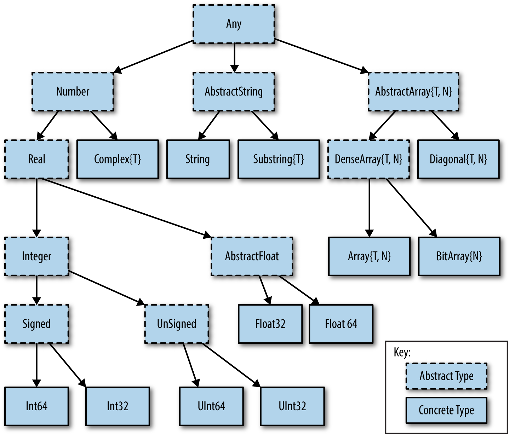

Bool <: IntegertrueMarie-Hélène Burle
Type safety (catching errors of inadequate type) performed at compilation time.
Examples: C, C++, Java, Fortran, Haskell.
Type safety performed at runtime.
Examples: Python, JavaScript, PHP, Ruby, Lisp.
Julia type system is dynamic (types are unknown until runtime), but types can be declared, optionally bringing the advantages of static type systems.
This gives users the freedom to choose between an easy and convenient language, or a clearer, faster, and more robust one (or a combination of the two).
At the bottom: concrete types.
Above: abstract types (concepts for collections of concrete types).
At the top: the Any type, encompassing all types.

From O’Reilly
One common type missing in this diagram is the boolean type.
It is a subtype of the integer type, as can be tested with the subtype operator <:
It can also be made obvious by the following:
Done with ::
Example:
This works:
This doesn’t work:
Type declaration is not yet supported on global variables; this is used in local contexts such as inside a function.
Example:
This works:
This doesn’t work:
The typeof function gives the type of an object:
Conversion between types is possible in some cases:
The names of types start with a capital letter and camel case is used in multiple-word names.